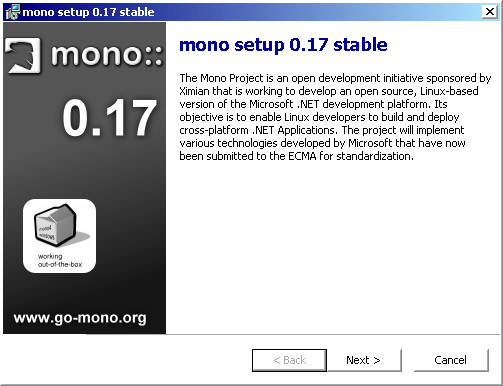

In order to obtain the required software you just need to visit the Mono download page at http://www.go-mono.org/download or any of the related sites.
You'll be able to complete everything in this document if you just install the runtime, but taking a look at the compiler package is well worth the effort. The compiler is written in C# and is 'self hosting' which means it is able to compile itself.
This page also lists the current versions of the software mono depends on. Make sure that your system has all the required versions, otherwise mono won't compile.
Oh. This is a very easy task now. If you just want to take a look at the possibilities of Mono get the Mono installer from the site of Johannes Roith <johannes@jroith.de>:
http://mono.jroith.de. You can get a link in
the download section of the Mono site too: http://www.go-mono.org/download
Then you just need a Windows machine. Better use Windows 2000 Professional, NT4 or XP.
Once you've got it, run the installer.
Remember, building your own Mono runtime and compiler from the sources is strongly recommended. You won't discover the power of Mono until you get it made this way. If you feel hungry about real programming with Mono, proceed like in the next section.
1.- Get Windows 2000 Professional or any Windows System supporting .NET SDK.
2.- Get the latest Cygwin distribution, be sure you install the GNU Build Tools packages. Take the openssh package if you plan to contribute to the project. If you feel insecure about the packages you need to install, install all of them, of course, Text, Admin, Games and Web are not necessary at all and you can pass of those. The fitness of your choice will depend of your knowledge on Linux and/or Cygwin. If in doubt install all.
3.- Install the .NET SDK.
4.- Install Cygwin.
5.- Get http://www.go-mono.org/mono-build-w32.sh and put it into your home directory in the cygwin setup.
6.- Enter your cygwin environment. If you have an account in the mono cvs, then export the variables as shown in http://www.go-mono.org/ccvs.html
This means. Enter: export CVSROOT=user@mono-cvs.ximian.com:/cvs/public
and export CVS_RSH=ssh
If you have no account DO NOTHING.
7.- Enter:
export ACLOCAL_FLAGS="-I /usr/local/share/aclocal"
and this: export PKG_CONFIG_PATH="/usr/local/bin"
8.- Run the script (mono-build-w32.sh)
9.- All should work fine know and you should see it download what necessary and build mono.
If you have noticed problems during step 8 and the execution stops because of errors as I cannot find that or such library or alike, try to:
1.- Create a directory mono-temp for example.
2.- Move and unzip all the zips the mono-build script downloads to /usr/local to that new directory. Do it one by one, copying the content of the created subdirectories (include, bin, etc) to their respectives in /usr/local. Take care, some libraries like libglib... must go into /usr/local/bin and not into /usr/local/lib.
3.- Jump into the /usr/local/mono directory and run ./autogen.sh
4.- Then run ./configure and after it: make and finally: make install.